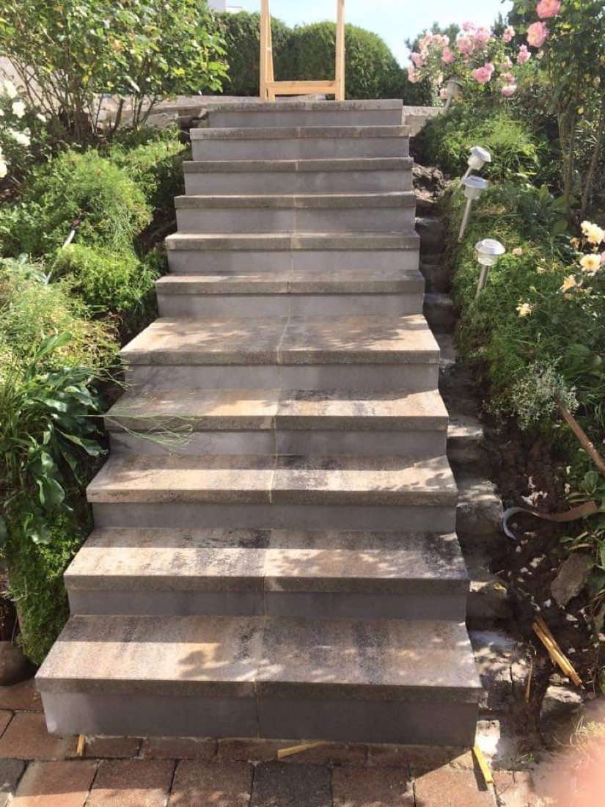
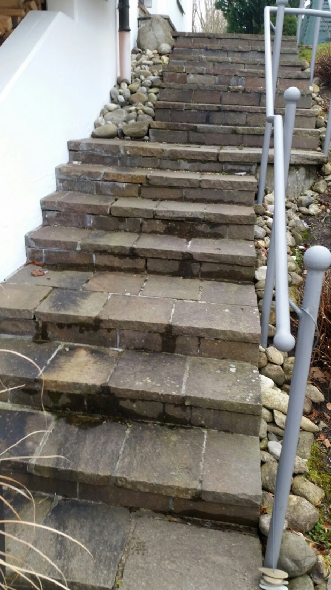
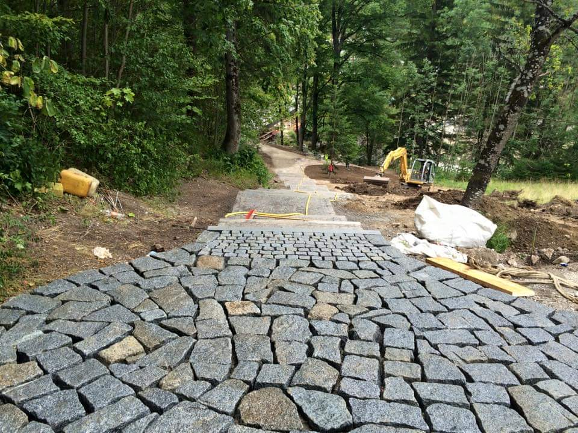

Treppen für jeden Hang. Auch den steilen.
Vom Hauseingang bis zur Gartentreppe am Hang. Wir bauen Treppen aus Naturstein und Blockstufen, sicher begehbar und gern barrierearm.

Steil ist kein Hindernis.
Ein Hang braucht eine Treppe, die gleichmäßig steigt und nicht wackelt. Jede Stufe bekommt ein festes Fundament und wird nach Schnur ausgerichtet.
Dafür bringt Herr Sopa die Erfahrung aus vielen Jahren im Tiefbau mit. Er weiß, wie ein Hang sich verhält.
- Hauseingänge mit Podest
- Gartentreppen am Hang
- Stufen in Wegen und Terrassen
- Treppen aus Blockstufen oder Natursteinplatten
Was eine gute Treppe ausmacht.
Auf einer Treppe merkt man jeden Fehler. Deshalb planen wir sie genau.
Das richtige Maß
Stufen sollen zum Schritt passen. Als Faustregel gilt: zwei Stufenhöhen und eine Auftrittstiefe ergeben rund 63 Zentimeter. Im Garten sind flache, tiefe Stufen bequemer als steile.
Griffig bei Nässe
Naturstein mit rauer Oberfläche bleibt auch bei Regen, Laub und Reif trittsicher. Das ist im Allgäu wichtiger als anderswo.
Jede Stufe gleich
Eine einzige Stufe, die anders ist, bringt jeden ins Stolpern. Deshalb sind alle Stufen einer Treppe gleich hoch.

Damit Sie auch in zwanzig Jahren gut hochkommen.
Wer barrierearm plant, denkt an später. Flache Stufen, Podeste zum Ausruhen, ein Handlauf und gutes Licht machen viel aus. Wo Platz ist, kann eine sanfte Rampe einzelne Stufen ersetzen.
Sagen Sie Herrn Sopa beim Termin vor Ort, worauf es Ihnen ankommt. Dann wird die Treppe danach geplant.
Fragen zu Treppen.
Geht eine Treppe auch an einem sehr steilen Hang?
In den meisten Fällen ja. Dann braucht es mehr Stufen, Podeste zum Verschnaufen und einen festen Unterbau. Wie es bei Ihnen am besten geht, klärt Herr Sopa beim kostenlosen Termin vor Ort.
Kann eine alte Treppe erneuert werden?
Ja. Wir bauen die alte Treppe zurück und kümmern uns um die Entsorgung. Ob sich gute alte Stufen wiederverwenden lassen, schauen wir uns vor Ort an.
Welches Material eignet sich für eine Außentreppe?
Bewährt haben sich Blockstufen aus Granit oder Beton und Stufen aus Natursteinplatten mit rauer Oberfläche. Was passt, hängt vom Gelände und vom übrigen Garten ab.
Was kostet eine Gartentreppe?
Das hängt von Länge, Material und Gelände ab. Nach dem Termin vor Ort bekommen Sie einen schriftlichen Kostenvoranschlag, bevor gebaut wird.
Das machen wir auch.
Vom Aushub bis zum letzten Stein. Sie haben einen Ansprechpartner für alles.



Erzählen Sie uns von Ihrem Projekt.
Am schnellsten geht es am Telefon. Oder Sie planen Ihr Projekt in einer Minute, und Herr Sopa meldet sich bei Ihnen.